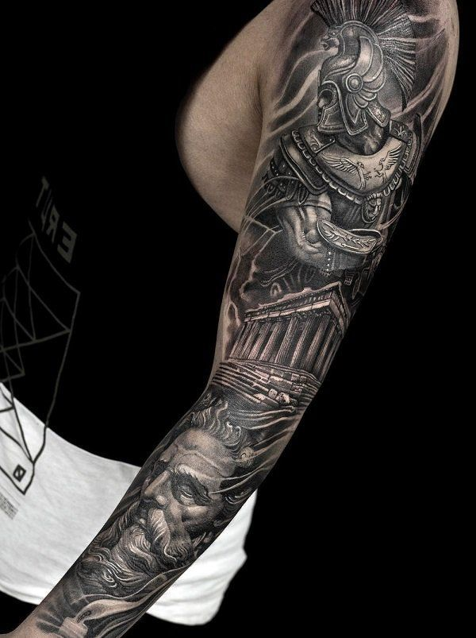
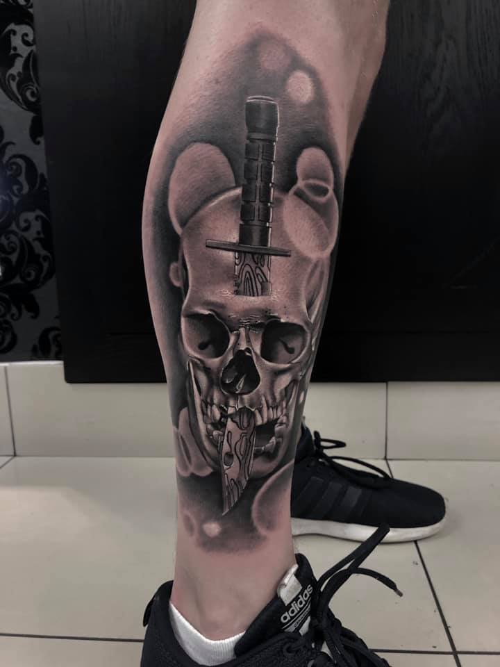
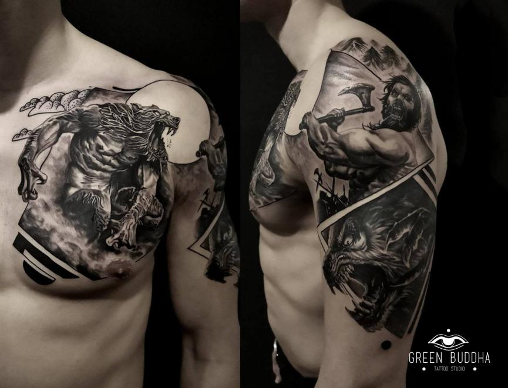
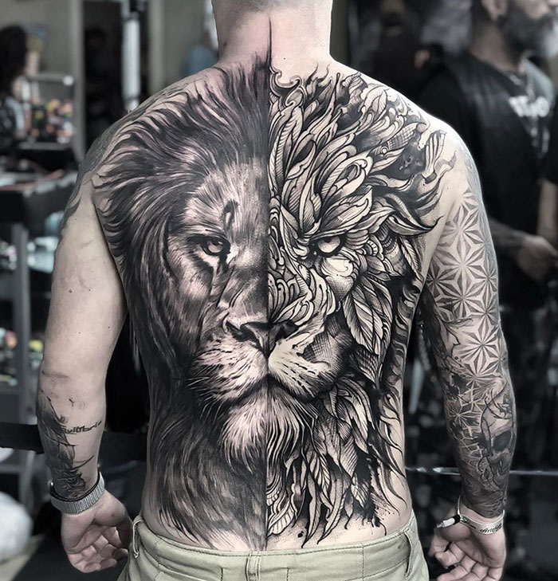
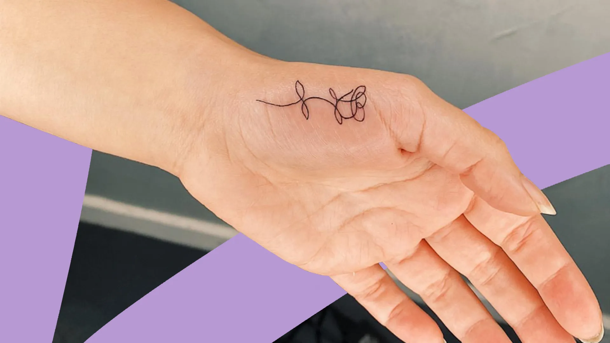
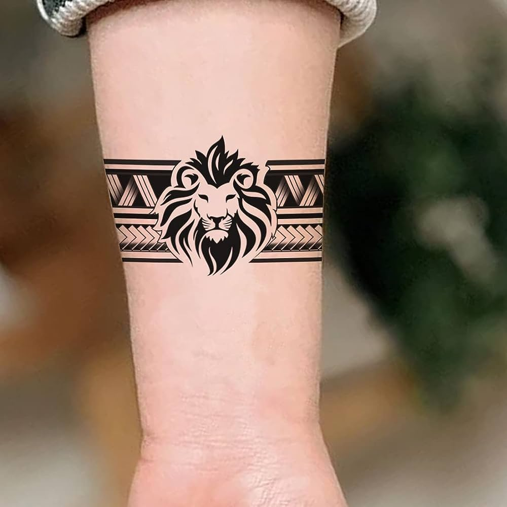
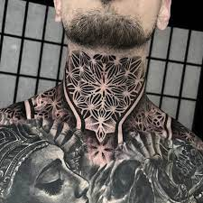
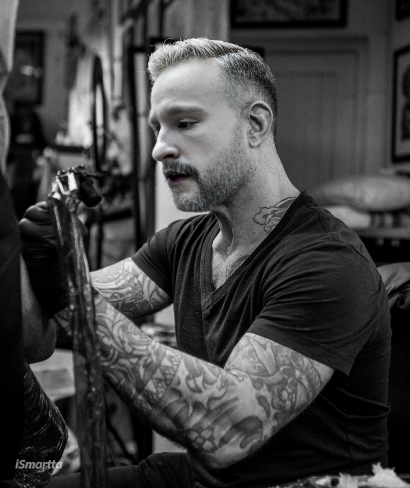

Tattoos can be deeply personal expressions of identity, beliefs, or
experiences. They serve as permanent reminders of significant moments or
people in our lives, and for some, they're a form of art or cultural
representation.
Couple of examples of designer Fotux work.
Book here!
Sleeve

Sleeve tattoos express stories, passions, art, culture, beauty,
individuality, symbolism. Took 2 sessions 5 hours per time
Over the rainbow exited to be working with such famous person, Thanks
Tyson!
Leg Tattoo

Leg tattoos involve intricate designs applied to the skin of the leg,
often requiring multiple sessions for completion.
Chest Tattoo

Chest tattoos typically involve larger designs that cover the chest
area, often symbolizing strength, courage, or personal significance.
Back Tattoo

Back tattoos are expansive, allowing for intricate designs spanning
the entire back, symbolizing personal stories, beliefs, or artistic
expression.
hand Tattoo

Hand tattoos are small yet impactful, often symbolizing meaningful
symbols or phrases, showcasing personal expression and style.
Wrist Tattoo

Wrist tattoos are discreet yet significant, often representing
personal mantras, symbols, or reminders, adding flair to everyday
gestures.
Neck Tattoo

Neck tattoos are bold statements, often showcasing meaningful symbols
or intricate designs, symbolizing courage, individuality, or cultural
identity.
About this Artist Fotux

Fotux is not just a tattoo artist; he's a passionate purveyor of inked
artistry, infusing every piece he creates with a blend of skill,
creativity, and devotion. Born and raised with an innate love for the
craft, Fotux's journey as a tattoo artist began with humble beginnings
but has since blossomed into a flourishing career.
Over the years, Fotux embarked on a transformative artistic journey that
led him to study in the heart of England, immersing himself in the rich
tapestry of artistic heritage and innovation. Through rigorous training
and dedication, he honed his technique, specializing in intricate line
work and captivating designs that push the boundaries of conventional
tattooing.
With over five years of professional experience under his
belt, Fotux has earned a reputation for excellence in the tattooing
community. His passion for his craft radiates through every piece he
creates, as he meticulously translates his clients' visions into
stunning works of art that adorn their skin. For Fotux, tattooing is
more than just a job.